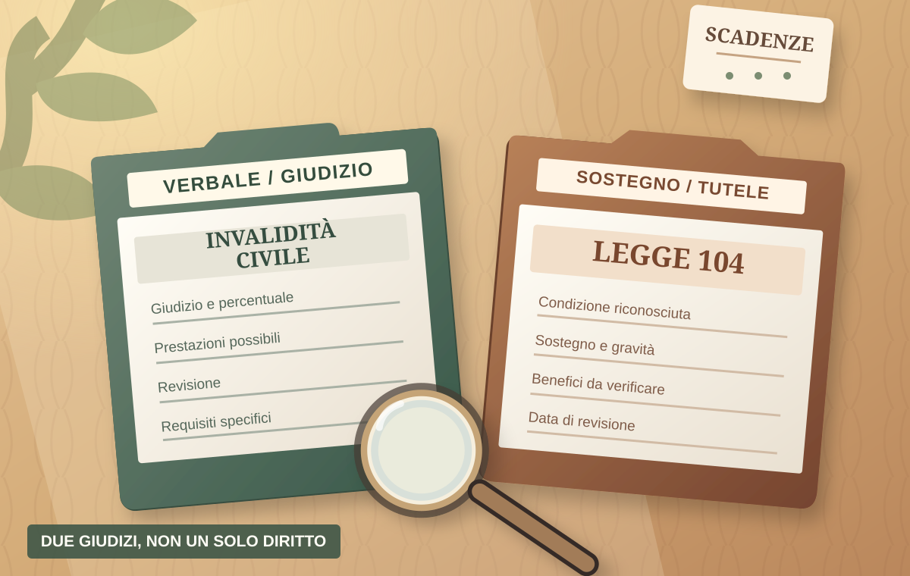

PENSIONE E INVALIDITÀ · GUIDA 04
Il verbale di invalidità civile e la legge 104: come leggerli senza confonderli

Hai ricevuto un verbale INPS? La prima cosa da capire è quale riconoscimento contiene: invalidità civile, condizione di disabilità ai sensi della legge 104, altre indicazioni sanitarie o più accertamenti. Una percentuale di invalidità civile non equivale automaticamente al riconoscimento previsto dalla legge 104.
Italia · Fonti istituzionali consultate il 14 ottobre 2026 · Guida pratica generale, non interpretazione di un verbale individuale.
1. Dove trovare il verbale ufficiale
Usa il Portale della disabilità INPS. L'INPS indica che permette di consultare domande, esiti, documenti e verbali redatti dall'Istituto o dalle ASL, nei servizi disponibili per la propria posizione. Verifica anche la Cassetta postale online, dove può essere disponibile la comunicazione con il verbale allegato. [INPS 1 e 2]
Conserva la comunicazione completa, il verbale, l'eventuale copia senza dati sanitari dettagliati, la data di ricezione e le successive comunicazioni di revisione. Se non trovi il documento o la copia non è leggibile, puoi rivolgerti alla sede INPS o a un patronato: non basarti su schermate parziali o su una vecchia fotografia del verbale. [INPS 2 e 3]
2. Quali parti leggere, nell'ordine
| Voce da cercare | Perché conta |
|---|---|
| Tipo di accertamento | Indica se si tratta di invalidità civile, legge 104, disabilità ai fini lavorativi o altri giudizi; il verbale e la terminologia possono differire in base alla procedura. |
| Esito o giudizio medico-legale | È il dato decisivo: percentuale, necessità di sostegno oppure altra formula specifica. Non confonderlo con la diagnosi clinica. |
| Data del provvedimento e comunicazione | Servono per ricostruire la pratica e verificare, con assistenza qualificata, gli eventuali termini di tutela. |
| Rivedibilità / revisione | Può essere indicata una data per nuovo accertamento. Non significa che il riconoscimento cessi automaticamente in quella data. |
| Indicazioni su agevolazioni | Eventuali requisiti sanitari per trasporti, veicoli o altre misure vanno controllati nella specifica dicitura: non sono tutti impliciti nella percentuale. |
Le voci esatte possono cambiare fra verbali redatti secondo la procedura precedente e documenti della nuova valutazione di base prevista dal d.lgs. 62/2024. [INPS 1, 3 e 9]
3. Invalidità civile e legge 104 non sono lo stesso riconoscimento
Invalidità civile: nel procedimento tradizionale viene espressa per gli adulti attraverso un giudizio e, quando applicabile, una percentuale. Le prestazioni economiche dipendono anche da requisiti ulteriori, come età, residenza e, per alcune misure, reddito; non discendono automaticamente da una percentuale. [INPS 3]
Legge 104/1992: riguarda il riconoscimento della condizione di disabilità e dei bisogni di sostegno; nel linguaggio dei verbali antecedenti alla riforma si incontra spesso la distinzione tra articolo 3, comma 1 e articolo 3, comma 3 (condizione di gravità). Nel modello riformato viene utilizzata anche la terminologia della necessità di sostegno o sostegno intensivo. Non leggere il numero di un articolo isolatamente dalla data e dal tipo di accertamento. [Normattiva 8, 9]
L'INPS precisa espressamente che un verbale di invalidità civile non sostituisce il riconoscimento della condizione di gravità prevista dalla legge 104, perché si tratta di giudizi medico-legali con effetti giuridici diversi. [INPS 4]
4. Articolo 3, comma 1 o comma 3: come interpretarlo
La formulazione tradizionale «art. 3, comma 1» indica il riconoscimento ai sensi della legge 104, senza attestare di per sé la condizione di gravità. La formulazione «art. 3, comma 3» identificava la condizione di gravità; nella disciplina modificata dal d.lgs. 62/2024, applicabile progressivamente ai territori interessati, l'articolo 3 descrive la necessità di sostegno intensivo. L'INPS conserva nelle istruzioni operative i richiami ai verbali storici: per una pratica concreta bisogna verificare quale testo sia applicabile. [Normattiva 8, 9]
Il riconoscimento ai sensi della legge 104 non comporta di per sé l'erogazione di un assegno mensile. Permessi retribuiti, congedi e altre tutele richiedono ulteriori condizioni (per esempio natura del rapporto di lavoro, effettiva assistenza e domanda quando prevista). Per i permessi, l'INPS ha pubblicato chiarimenti specifici nel settembre 2026: non si deve ridurre la questione alla sola dicitura «104». [INPS 10]
5. Se sul verbale trovi «rivedibile» o una data di revisione
La data di revisione indica che l'accertamento sanitario potrà essere ripetuto. L'INPS chiarisce che, nel regime previsto dall'articolo 25, comma 6-bis, del decreto-legge 90/2014, i diritti e i benefici già acquisiti con verbali soggetti a revisione si conservano in attesa dell'accertamento di revisione e della conclusione del relativo iter, nei limiti delle disposizioni applicabili. La revisione non deve quindi essere interpretata automaticamente come annullamento del verbale il giorno indicato. [INPS 5]
Controlla comunque ogni convocazione e gli eventuali inviti a inviare documentazione. L'INPS può definire alcune revisioni sulla base degli atti sanitari, oppure convocare l'interessato; ignorare le comunicazioni può avere conseguenze. Non promettere il mantenimento indefinito di benefici in assenza dei requisiti amministrativi o al di fuori delle condizioni previste. [INPS 3 e 5]
6. Quali agevolazioni posso chiedere con il verbale?
La risposta dipende dalla dicitura sanitaria specifica e dalle regole della singola misura, non semplicemente dal possesso del verbale. L'INPS segnala che nei verbali possono essere attestati requisiti relativi al contrassegno di parcheggio e alle agevolazioni fiscali sui veicoli; sono valutazioni distinte e il rilascio effettivo può spettare ad altre amministrazioni. [INPS 6]
Per il lavoro, permessi e congedi richiedono l'accertamento previsto dalla normativa e ulteriori requisiti. Per il collocamento mirato legge 68/1999 esistono specifiche valutazioni. Per le prestazioni economiche è necessario che risultino anche i requisiti amministrativi. Evita affermazioni come «con il 74% si ha automaticamente una pensione» o «con la 104 è garantito il contrassegno»: sono conclusioni non fondate. [INPS 3, 6 e 10]
7. Copia integrale, copia senza diagnosi e QR Code
Nella procedura tradizionale l'INPS indica l'invio del verbale in due versioni: una completa dei dati sanitari e una con il solo giudizio per gli usi amministrativi. Per dimostrare un requisito a terzi, quando sufficiente, usa la copia priva dei dettagli clinici invece del documento con diagnosi. [INPS 3 e circolare 42/2025]
Per i giudizi di invalidità civile definitivi, INPS mette inoltre a disposizione un QR Code per attestare lo status e consentire le verifiche previste senza mostrare l'intero verbale. Non è una garanzia generale di tutti i benefici e non sostituisce qualsiasi documento richiesto dall'ente competente. [INPS 7]
8. Riforma 2026: la provincia e la data della pratica cambiano la procedura
Dal 1° marzo 2026 la sperimentazione della nuova valutazione di base prevista dal d.lgs. 62/2024 si è estesa ad altre 40 province, incluse Udine e Pordenone. Nei territori e casi interessati, la procedura ordinaria si avvia con l'invio telematico del certificato medico introduttivo, senza una successiva domanda amministrativa di avvio; il procedimento mira a unificare gli accertamenti ma non cancella le differenze fra i benefici. La riforma è prevista per tutto il territorio dal 1° gennaio 2027, salvo ulteriori interventi. [INPS 9]
Eccezione per chi ha almeno 70 anni: dal 1° giugno 2026, nei territori sperimentali, se ricorrono le specifiche condizioni di patologie croniche e progressiva perdita di autonomia individuate dall'INPS, può applicarsi la procedura precedente, compresa la domanda amministrativa entro 90 giorni. L'età da sola non basta: il medico certificatore verifica le condizioni. Per le pratiche precedenti e i certificati inviati prima dell'estensione esistono regole transitorie da verificare. [INPS 11]
Importante: le indicazioni di questa guida per i vecchi verbali non devono essere applicate meccanicamente ai nuovi atti della valutazione di base, che possono avere contenuti e terminologie diversi. Per sapere quale regime riguarda la tua pratica controlla provincia, data del certificato e comunicazioni INPS. [INPS 9]
9. Una verifica pratica in cinque passaggi
- Recupera tutti i verbali pertinenti, non soltanto la percentuale comunicata oralmente, e conserva la data di ricezione.
- Individua il tipo di accertamento e il giudizio specifico per invalidità civile e, se presente, legge 104.
- Leggi revisione, data, durata e eventuali diciture sulle agevolazioni.
- Verifica il beneficio concreto che ti interessa (permessi, prestazione economica, trasporto, veicoli): ognuno ha requisiti propri.
- Se manca una decisione o non sei d'accordo, conserva il provvedimento integrale e chiedi tempestivamente di verificare il rimedio e le eventuali scadenze. Per questo consulta la guida 01 sui rimedi.
10. Tre errori da evitare
- «Ho l'80% di invalidità, quindi ho la legge 104 in condizione di gravità». No: serve il giudizio specifico.
- «Il verbale è rivedibile, quindi i diritti cessano automaticamente alla data stampata». No: è necessario applicare le regole sulla conservazione dei benefici in attesa della revisione.
- «Ho il verbale, quindi posso chiedere qualsiasi sconto o prestazione». No: occorre verificare il requisito sanitario esatto e le condizioni amministrative della misura.
Fonti ufficiali e norme
Fonti INPS e Normattiva consultate il 14 ottobre 2026. Alcune pagine INPS descrivono ancora la procedura precedente: quando si applica la riforma del 2026 è necessario seguire la disciplina territorialmente pertinente.
- INPS – Portale della disabilità: accesso ai verbali e alle domande.
- INPS – Guida alla lettura del verbale sanitario e Cassetta postale.
- INPS – Invalidità civile: accertamento, verbali e revisione; circolare 42/2025 (procedura tradizionale).
- INPS – Circolare 34/2018: distinzione verbale di invalidità e riconoscimento legge 104.
- INPS – Circolare 10/2015: effetti dei verbali rivedibili; circolare 127/2016: permessi e congedi durante la revisione.
- INPS – Dicitura dei requisiti sanitari per agevolazioni veicoli e contrassegno.
- INPS – QR Code attestazione status invalidità civile.
- Normattiva – Legge 104/1992, articolo 3.
- Normattiva – Decreto legislativo 62/2024: valutazione di base e modifiche alla legge 104; INPS – Terza fase dal marzo 2026.
- INPS – Permessi legge 104, circolare 100/2026.
- INPS – Riforma disabilità: eccezione per ultrasettantenni da giugno 2026.